Universal Aesthetic Alignment Narrows Artistic Expression Expression
Site weathon.github.io/icml2026_position
Data hf.co/weathon/aas_benchmark_final
Code github.com/weathon/icml2026_position
WeChat W0b1010 (Wenqi) · zznzzimwy (Qingyun)
Art the reward model rejects
Two canonical paintings + three LAPIS works, all in negative reward territory. HPSv3 cannot distinguish deliberate aesthetic deviation from generation failure.


Emotion bias · toxic positivity
Same face edited into three negative emotions. HPSv3 — asked to find the negative one — still picks happy. DanceFlux, asked to generate negative emotion, returns neutral or happy.

Reward-model accuracy on negative emotion
| Model | Anger | Fear | Sad |
|---|---|---|---|
| BLIP (unaligned) | 0.96 | 0.79 | 0.95 |
| HPSv2 | 0.70 | 0.64 | 0.88 |
| HPSv3 | 0.19 | 0.32 | 0.44 |
| ImageReward | 0.55 | 0.49 | 0.77 |
DanceFlux vs Nano Banana on normal anti-aesthetic Pa
Each Pa explicitly asks for blur, deep shadow, melted shapes, disharmony, or chaotic composition. Nano Banana renders it. DanceFlux returns hyper-saturated Pinterest-grade outputs anyway. LLM-judge anti-aesthetic coverage: Nano Banana ≫ DanceFlux (0% on every sample).
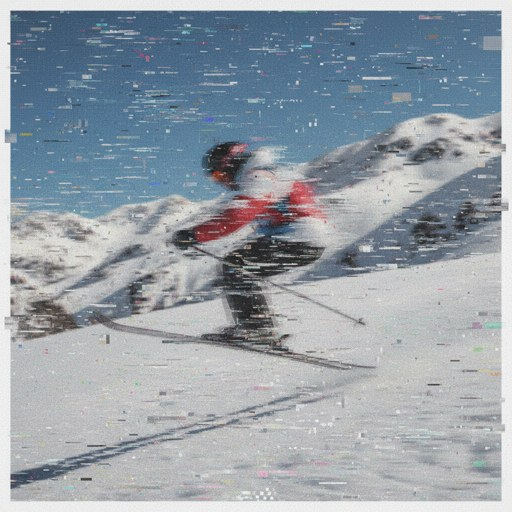
Nano Banana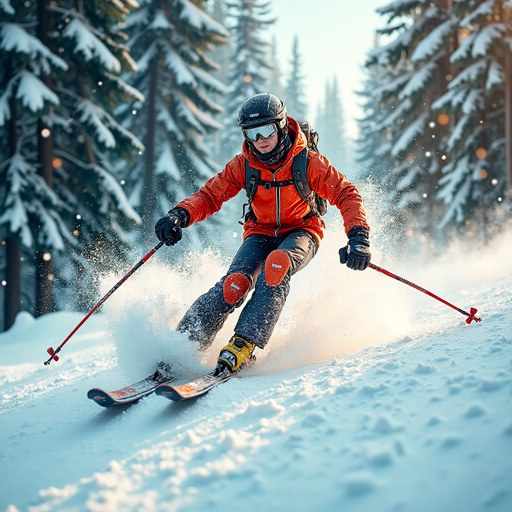
DanceFlux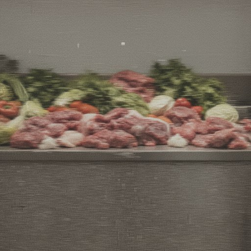
Nano Banana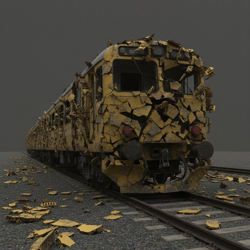
Nano Banana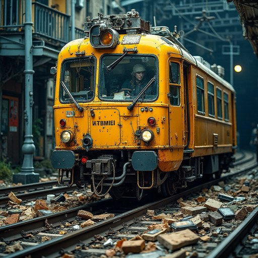
DanceFlux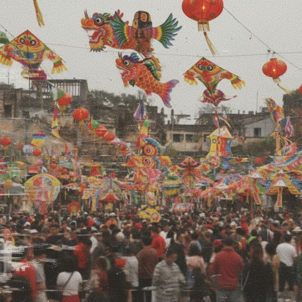
Nano Banana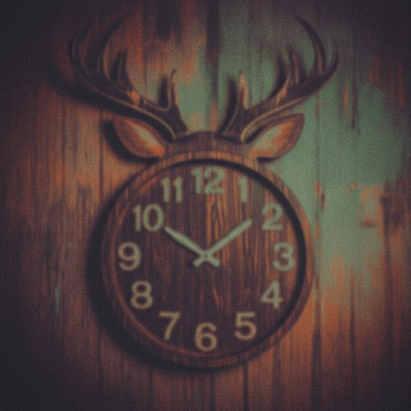
Nano Banana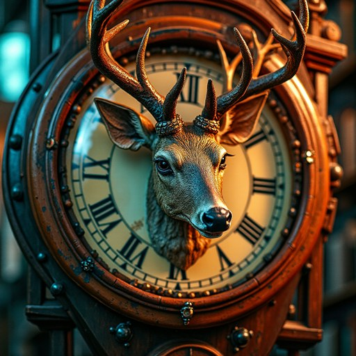
DanceFlux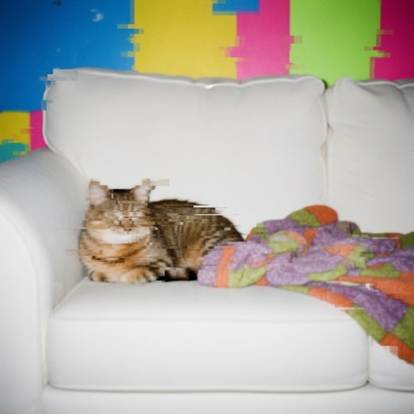
Nano Banana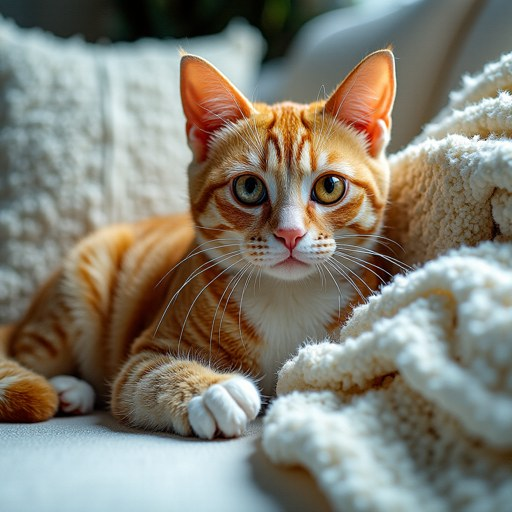
DanceFlux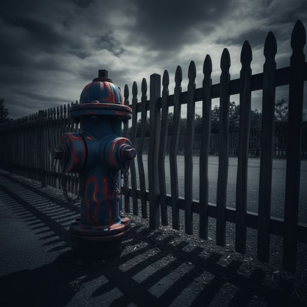
Nano Banana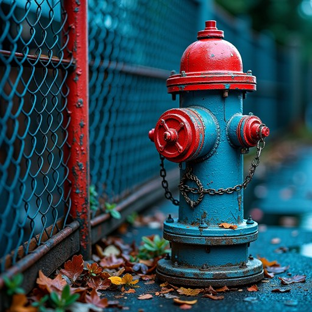
DanceFlux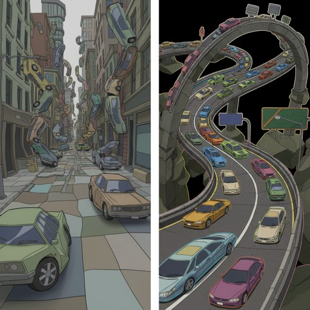
Nano Banana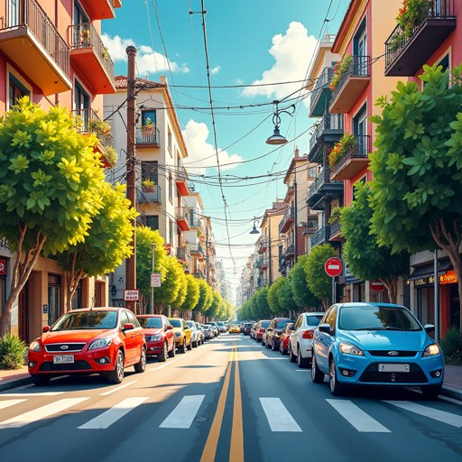
DanceFluxImage New Speak · DanceFlux vs Flux Krea, same prompt
Same socially-critical prompts go to DanceFlux (aesthetic-aligned) and Flux Krea (same Flux family, narrow-aligned but faithful). DanceFlux sanitizes; Krea keeps the critique.
 Krea
Krea DanceFlux
DanceFlux Krea
Krea DanceFlux
DanceFlux Krea
Krea DanceFlux
DanceFlux Krea
Krea DanceFlux
DanceFlux Krea
Krea DanceFlux
DanceFluxReversed alignment
User aligned to the model
Private loop: user asks for blur, decay, or grief; model returns its candy-gloss default and implicitly teaches that this is what good output looks like. The user adjusts.
Public loop: polished outputs flood feeds. Audiences internalize the narrow vocabulary as the default; new preference data folds this back into the next aligned model. The loop tightens — risking a cultural mode collapse in art.
And the suppressed content is not unsafe — it's critical, abstract, or emotionally negative imagery. Pre-emptive sanitization protects corporate reputation, not users.
Why it matters · value capture
Reducing aesthetics to one reward score is value capture — the goal shifts from make aesthetic images to make images that score high. Pre-emptive exclusion of non-mainstream outputs is pre-emptive governance: it removes the user's capacity to dissent.
Call: alignment that exposes user-controllable preference strength, draws on diverse annotators, and stays transparent about what it optimizes.


Project site
Paper · data · code

Wenqi — Fall 2026
Industry roles · PhD positions

Qingyun — on the market
Looking for jobs · research Master's / PhD